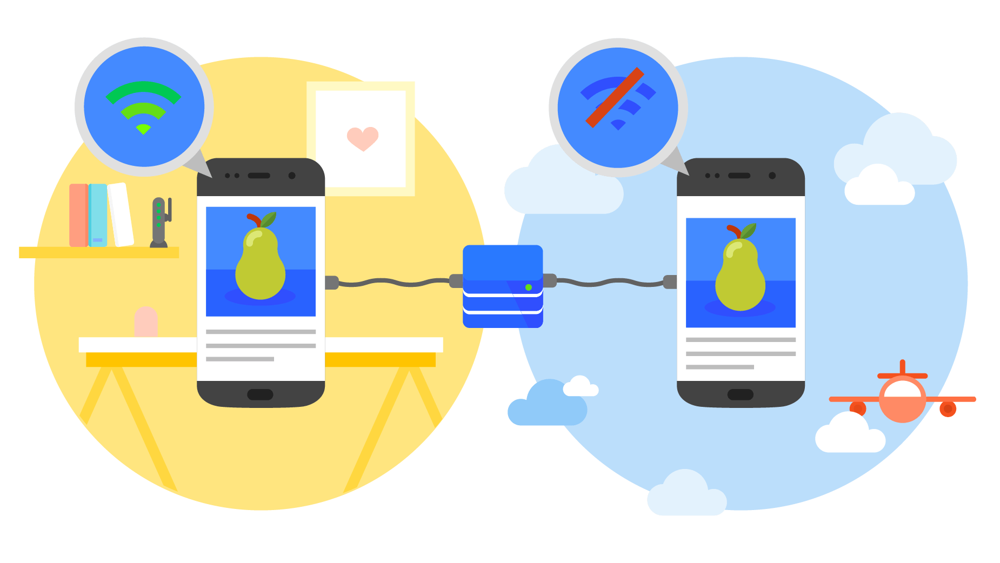
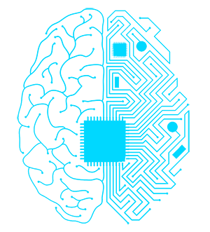
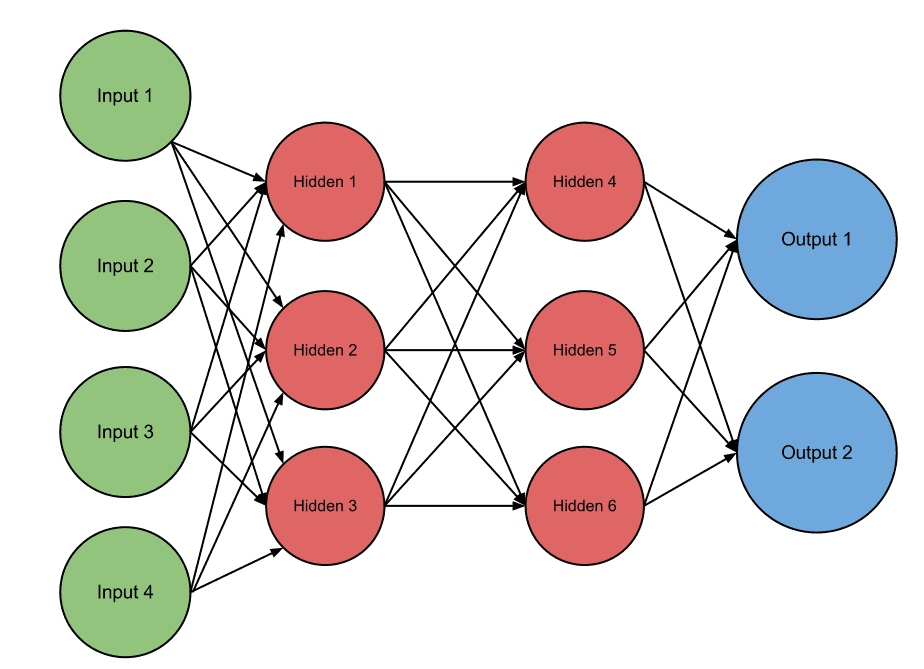
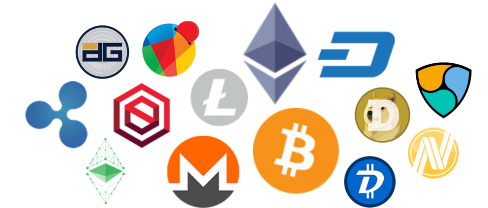
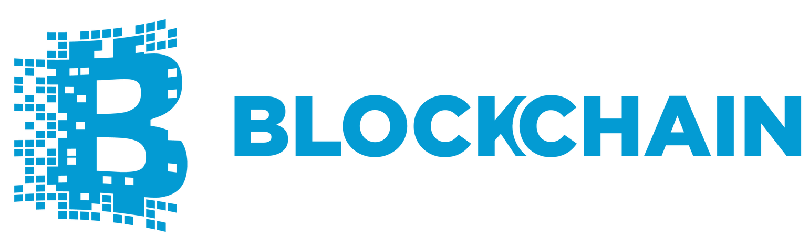
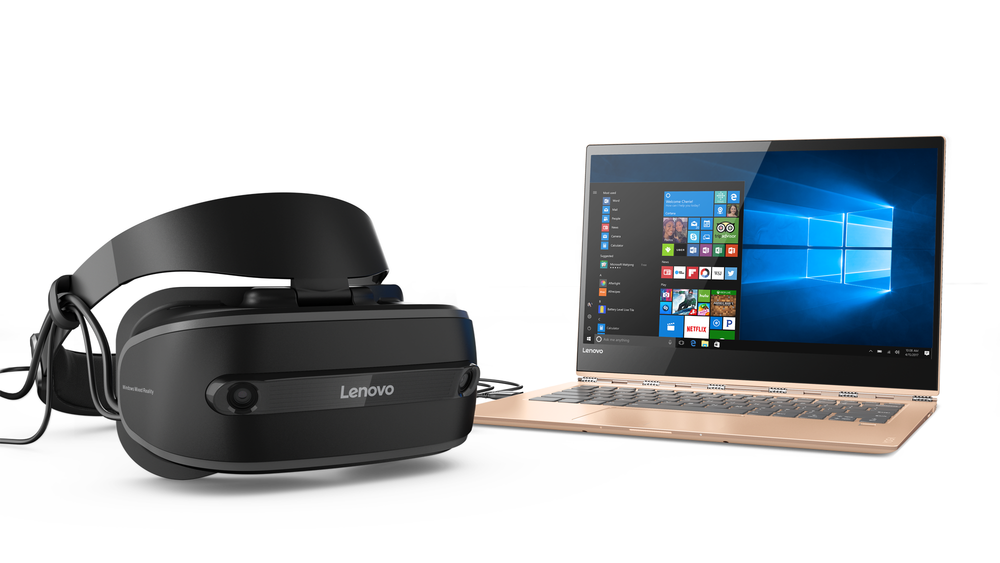
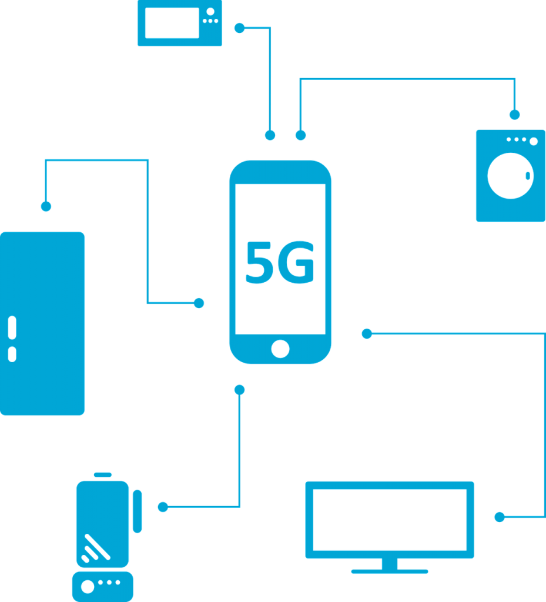

Practica Final Seminario de Tecnologia
HTML 5
HTML5 es un lenguaje markup (de hecho, las siglas de HTML significan Hyper Text Markup Language)
usado para estructurar y presentar el contenido para la web. Es uno de los aspectos fundamentales para el funcionamiento de
los sitios, pero no es el primero. Es de hecho la quinta revisión del estándar que fue creado en 1990. A fines del año pasado,
la Wmm3C la recomendó para transformarse en el estándar a ser usado en el desarrollo de proyectos venideros. Por así decirlo, qué
es HTML5 está relacionado también con la entrada en decadencia del viejo estándar HTML 4, que se combinaba con otros lenguajes
para producir los sitios que podemos ver hoy en día. Con HTML5, tenemos otras posibilidades para explotar usando menos recursos.
Con HTML5, también entra en desuso el formato XHTML, dado que ya no sería necesaria su implementación.
HTML es un lenguaje que interpreta el navegador web para mostrar los sitios o aplicaciones web tal y
como estamos acostumbrados. En la Imagen 1 verás cómo el navegador nos muestra un sitio web y en la Imagen 2 verás cómo se ve en
lenguaje HTML.
En términos de Markup, el HTML5 introduce algunos elementos que hacen que se aggiorne a los tiempos que
corren. Así, muchas de las novedades están relacionadas con la forma de construir websites que se tiene en la actualidad.
Una de las más importantes novedades está relacionada con la inserción de multimedia en los sitios web, que ahora contarán con etiquetas
HTML especiales para poder ser incluidos. Por otro lado, algunos aspectos de diseño también son incluidos en el lenguaje, así como también
algunos detalles de navegación. Veremos todo esto en algunas líneas.
La idea detrás de HTML5 es que podamos visualizar el contenido multimedia variado que podemos encontrar
en internet aún cuando nos encontramos en dispositivos de gama baja que no podrían soportarlo cuando tienen que instalar infinidad de
plug-ins. No solamente contamos con etiquetas especiales como audio, video y canvas, sino también integración con contenidos de gráficos
en vectores (que anteriormente se conocía como la etiqueta object. Con estas etiquetas, los usuarios pueden consumir videos y canciones,
por ejemplo, sin necesidad de instalar nada de forma adicional.
Para mas informacion: DevCode HTML5, Codigo Facilito HTML 5,
W3 School HTML, Mozilla Developer.
Interesado en HTML5? Aqui unos cuantos tutoriales:
CSS 3
Hojas de estilo en cascada (o CSS, siglas en inglés de Cascading Style Sheets) es un lenguaje de diseño gráfico para definir y crear
la presentación de un documento estructurado escrito en un lenguaje de marcado.2 Es muy usado para establecer el diseño visual de los
documentos web, e interfaces de usuario escritas en HTML o XHTML; el lenguaje puede ser aplicado a cualquier documento XML, incluyendo
XHTML, SVG, XUL, RSS, etcétera. También permite aplicar estilos no visuales, como las hojas de estilo auditivas. Junto con HTML y
JavaScript, CSS es una tecnología usada por muchos sitios web para crear páginas visualmente atractivas, interfaces de usuario para
aplicaciones web, y GUIs para muchas aplicaciones móviles (como Firefox OS).3
CSS sirve para definir la estética de un sitio web en un documento externo y eso mismo permite que
modificando ese documento (la hoja CSS) podamos cambiar la estética entera de un sitio web… ese es precisamente el poder de CSS, en
otras palabras, el mismo sitio web puede variar totalmente de estética cambiando solo la CSS, sin tocar para nada los documentos HTML
o jsp o asp que lo componen, ya con CSS3 se suman muchas nuevos efectos que harán de la que la parte visual de nuestra página sea mucho
más agradable y llamativa, como sombras, transformaciones de figuras, creación sencilla de bordes y efectos 3D.
CSS3 es la última evolución del lenguaje de las Hojas de Estilo en Cascada (Cascading Style Sheets), y
pretende ampliar la versión CSS2.1. Trae consigo muchas novedades altamente esperadas , como las esquinas redondeadas, sombras,
gradientes , transiciones o animaciones, y nuevos layouts como multi-columnas, cajas flexibles o maquetas de diseño en cuadrícula
(grid layouts).
Las ventajas principales en esta nueva versión son la inclusión de nuevas propiedades especialmente en cuanto al aspecto gráfico
(recordemos que CSS también es utilizado para describir estilos para medios de audio) aunque se prevean mejores sustanciales en otros
medios como el de sonido. Permite lograr estilos y efectos visuales que antes sólo eran posibles por medio de tecnologías adicionales.
Las novedades de CSS3 nos permiten ahorrarnos tiempo y trabajo al poder seguir varias técnicas (bordes redondeados, sombra en el texto,
sombra en las cajas, etc) sin necesidad de usar un editor gráfico.
Para mas informacion: W3School, LibrosWeb CSS,
Mozilla CSS3, Ecured.
Quieres aprender CSS 3? Aqui unos cuantos tutoriales:
JavaScript
JavaScript es un lenguaje de programación. JavaScript se utiliza principalmente del lado del cliente
(es decir, se ejecuta en nuestro ordenador, no en el servidor) permitiendo crear efectos atractivos y dinámicos en las páginas web.
Los navegadores modernos interpretan el código JavaScript integrado en las páginas web.
Para entender lo que es JavaScript consideremos lo siguiente. Un usuario escribe una dirección web en su navegador, por ejemplo
http://www.udoym.edu.do El servidor recibe la petición y como respuesta a esa petición envía al ordenador del usuario código HTML
junto a código JavaScript. El código HTML se encarga de que en la pantalla se muestre algo, por ejemplo una imagen, un menú, etc.
El código JavaScript se puede encargar de crear efectos dinámicos en respuesta a acciones del usuario, por ejemplo que se despliegue
un menú tipo acordeón cuando el usuario pasa el ratón por encima de un elemento del menú.
La ventaja de JavaScript es que al estar alojado en el ordenador del usuario los efectos son muy rápidos
y dinámicos. Al ser un lenguaje de programación permite toda la potencia de la programación como uso de variables, condicionales, bucles,
etc. También podemos citar algún inconveniente: por ejemplo si el usuario tiene desactivado JavaScript en su navegador, no se mostrarán los
efectos. No obstante, hoy día la mayoría de los usuarios navegan por la web con JavaScript activado.
avaScript se diseñó con una sintaxis similar a C, aunque adopta nombres y convenciones del lenguaje de
programación Java. Sin embargo, Java y JavaScript tienen semánticas y propósitos diferentes. Todos los navegadores modernos interpretan el
código JavaScript integrado en las páginas web. Para interactuar con una página web se provee al lenguaje JavaScript de una implementación
del Document Object Model (DOM).
Para mas informacion: Libros Web JavaScript, Documentacion Oficial Mozilla,
W3 School, Desarrollo Web.
Si estas interesado en aprender este lenguaje debajo te dejo varios cursos basicos y GRATIS:
Progressive Web App

Las Progressive Web Apps son experiencias que combinan lo mejor de la Web y lo mejor de las apps. Están
disponibles para los usuarios a partir de la primera visita en una pestaña del navegador y no requieren instalación. A medida que el
usuario compila progresivamente una relación con la app con el paso del tiempo, se hace más y más poderosa. Se carga rápidamente,
incluso con redes débiles, envía notificaciones push relevantes, tiene un ícono en la pantalla principal y se carga como experiencia
de pantalla completa y de primer nivel.
Una Progressive Web App es: Progresiva: funciona para todos los usuarios, sin importar la elección de navegador, porque está
construida con mejora progresiva como principio central.
Adaptable: se adapta a cualquier factor de formulario, sea escritorio, móvil, tablet o lo que venga en el futuro.
Independiente de la conectividad: mejorada con service workers para trabajar sin conexión o con redes de mala calidad.
Progressive web apps (o aplicaciones web progresivas), es un término que se da a una nueva generación de aplicaciones que incrementan su
funcionalidad, conforme las capacidades del dispositivo en el que se ejecutan, incrementan, de ahí la palabra progresiva. La siguiente
parte del nombre web, hace referencia a que se construyen utilizando estándares de desarrollo web, algunos ya conocidos como HTML, CSS
y javaScript; y una nueva generación de APIs de javaScript. La parte final app es porque las Progressive Web Apps se comportan como
aplicaciones web nativas, pero usan tecnologías web.
En términos muy simplistas, son páginas web que se comportan como aplicaciones nativas. Es un oración muy simple, pero también muy profunda.
Las apps nativas (iOs, Android por ejemplo), históricamente han tenido una serie de ventajas sobre las páginas web, ¿como cuáles? Almacenamiento
local, ejecutarse offline, notificaciones push, performance, acceso a hardware, acceso al homescreen del dispositivo, entre otros.
Para mas informacion: CodigoFacilito Progressive Apps, Documentacion Oficial Google,
Progressive Web APP, Progressive Web Apps Que es y Como funciona.
Si quieres conocer mas sobre Web Apps aqui te dejo unos cuantos videos:
Inteligencia Artificial
La inteligencia artificial (Artificial Intelligence, o AI) es la simulación de procesos de
inteligencia humana por parte de máquinas, especialmente sistemas informáticos. Estos procesos incluyen el aprendizaje
(la adquisición de información y reglas para el uso de la información), el razonamiento (usando las reglas para llegar
a conclusiones aproximadas o definitivas) y la autocorrección. Las aplicaciones particulares de la AI incluyen sistemas
expertos, reconocimiento de voz y visión artificial.
AI puede ser categorizado en cualquier número de maneras, pero aquí hay dos ejemplos.
El primero clasifica los sistemas de AI como AI débil o AI fuerte. La AI débil, también conocida como AI estrecha, es un
sistema de AI que está diseñado y entrenado para una tarea en particular. Los asistentes personales virtuales, como Siri
de Apple, son una forma de débil de AI.
La AI fuerte, también conocida como inteligencia general artificial, es un sistema de AI con
habilidades cognitivas humanas generalizadas, de modo que cuando se le presenta una tarea desconocida, tiene suficiente
inteligencia para encontrar una solución. La prueba de Turing, desarrollada por el matemático Alan Turing en 1950, es un método
utilizado para determinar si una computadora puede realmente pensar como un humano, aunque el método es polémico.
Piense en la IA como un iceberg. Lo que usted ve como usuario solo es la punta; sin embargo,
debajo de la superficie acecha un gigantesco sistema de soporte de científicos e ingenieros de datos, cantidades masivas de
datos, extracción de labor intensiva y preparación de esos datos, así como una enorme infraestructura de tecnología.
Se requiere un equipo especializado de científicos de datos y desarrolladores para acceder a los datos correctos, preparar
los datos, construir los modelos correctos y luego integrar las predicciones de vuelta al usuario final, así como CRM.
Para mas informacion: WikiPedia AI,
Tech Target,
Inteligencia Artificial?,
Sales Force Inteligencia Artificial.
Si quieres conocer mas sobre IA aqui te dejo unos cuantos videos:
Machine Learning
Machine Learning es una disciplina científica del ámbito de la Inteligencia Artificial que
crea sistemas que aprenden automáticamente. Aprender en este contexto quiere decir identificar patrones complejos en
millones de datos. La máquina que realmente aprende es un algoritmo que revisa los datos y es capaz de predecir
comportamientos futuros. Automáticamente, también en este contexto, implica que estos sistemas se mejoran de forma
autónoma con el tiempo, sin intervención humana.
Lo que esta rama pretendía estudiar era el reconocimiento de patrones (en los procesos de ingeniería,
matemáticas, computación, etc.) y el aprendizaje por parte de las computadoras. En los albores de la IA, los investigadores
estaban ávidos por encontrar una forma en la cual las computadoras pudieran aprender únicamente basándose en datos.
Para mas informacion: Machine Learning Guia Completa,
Machine Learning: What it is and why it matters .
Si quieres conocer mas sobre ML aqui te dejo unos cuantos videos:
Deep Learning

Aprendizaje profundo (en inglés, deep learning) es un conjunto de algoritmos de clase aprendizaje
automático (en inglés, machine learning) que intenta modelar abstracciones de alto nivel en datos usando arquitecturas compuestas de transformaciones
no lineales múltiples.
El aprendizaje profundo es parte de un conjunto más amplio de métodos de aprendizaje automático
basados en asimilar representaciones de datos. Una observación (por ejemplo, una imagen) puede ser representada en muchas formas
(por ejemplo, un vector de píxeles), pero algunas representaciones hacen más fácil aprender tareas de interés (por ejemplo, "¿es
esta imagen una cara humana?") sobre la base de ejemplos, y la investigación en este área intenta definir qué representaciones
son mejores y cómo crear modelos para reconocer estas representaciones.
Para mas informacion: Deep Learning, Que es?,
DL Udacity.
Si quieres conocer mas sobre DL aqui te dejo unos cuantos videos:
Red Neuronal

Las Redes Neuronales son un campo muy importante dentro de la Inteligencia Artificial.
Inspirándose en el comportamiento conocido del cerebro humano (principalmente el referido a las neuronas y sus conexiones),
trata de crear modelos artificiales que solucionen problemas difíciles de resolver mediante técnicas algorítmicas convencionales.
Las redes de neuronas artificiales (denominadas habitualmente como RNA o en inglés como: “ANN”)
son un paradigma de aprendizaje y procesamiento automático inspirado en la forma en que funciona el sistema nervioso de los animales.
Se trata de un sistema de interconexión de neuronas que colaboran entre sí para producir un estímulo de salida. En inteligencia artificial
es frecuente referirse a ellas como redes de neuronas o redes neuronales. Forman parte de los denominados “Sistemas Inteligentes“, dentro
de la rama de la Inteligencia Artificial.
Para mas informacion: Red Neuronal, Que es? Para que sirve?,
Redes Neuronales.
Si quieres conocer mas sobre RN aqui te dejo unos cuantos videos:
Criptomonedas

Las criptomonedas son monedas virtuales. Pueden ser intercambiadas y operadas como cualquier otra divisa
tradicional, pero están fuera del control de los gobiernos e instituciones financieras. Existe un gran número de criptodivisas disponibles,
todas con sus propias características y aplicaciones. Las que tienen mayor capitalización de mercado son -al menos por ahora- una minoría,
que incluye bitcoin, bitcoin cash, ether, litecoin, ripple y dash.
En los sistemas de criptomonedas, se garantiza la seguridad, integridad y equilibrio de sus estados de cuentas
(contabilidad) por medio de un entramado de agentes (transferencia de archivo segmentada o transferencia de archivo multifuente) que se verifican
(desconfían) mutuamente llamados mineros, que son, en su mayoría, público en general y protegen activamente la red (el entramado) al mantener
una alta tasa de procesamiento de algoritmos, con la finalidad de tener la oportunidad de recibir una pequeña propina, que se reparte de manera
aleatoria.
Los primeros intentos de integrar la criptografía con el dinero electrónico fueron hechos por David Chaum, mediante
el DigiCash y el ecash, los cuales utilizaban la criptografía para volver anónimas las transacciones de dinero, aunque con una emisión y liquidación
(pago) centralizado. El concepto o idea de criptomoneda fue descrita por primera vez por Wei Dai, en 1998, donde propuso la idea de crear un nuevo
tipo de dinero descentralizado que usara la criptografía como medio de control,10 mientras que la primera criptomoneda que se creó fue Bitcoin,
creada en 2009 por el desarrollador de pseudónimo Satoshi Nakamoto, el cual usa el conjunto de funciones criptográficas SHA-2 (exactamente el SHA-256)
como su esquema PoW (prueba de trabajo).
Las criptomonedas son un modelo de monedas virtuales que no se pueden tocar, ya que solo existen en formato digital.
Estas monedas electrónicas se saltan los límites geográficos, ya que se pueden gestionar y operar desde cualquier parte del mundo. Se utilizan sistemas
para encriptarlas, mediante claves de seguridad, y así convertirlas en un sistema seguro y anónima para las personas, y se pueden utilizar para realizar
pagos y realizar transacciones económicas, tal y como se utiliza el dinero convencional.
Para mas informacion: Criptomonedas,
Que son las Criptomonedas,
Criptomonedas WikiPedia,
Tipos de Criptomonedas.
Si quieres conocer mas sobre Criptomonedas aqui te dejo unos cuantos videos:
BlockChain

Una cadena de bloques o cadena articulada, conocida en inglés como blockchain, es una estructura
de datos en la que la información contenida se agrupa en conjuntos (bloques) a los que se les añade metainformaciones relativas a
otro bloque de la cadena anterior en una línea temporal, de manera que gracias a técnicas criptográficas, la información contenida
en un bloque sólo puede ser repudiada o editada modificando todos los bloques posteriores. Esta propiedad permite su aplicación en
entorno distribuido de manera que la estructura de datos blockchain puede ejercer de base de datos pública no relacional que
contenga un histórico irrefutable de información. En la práctica ha permitido, gracias a la criptografía asimétrica y las funciones
de resumen o hash, la implementación de un registro contable (ledger) distribuido que permite soportar y garantizar la seguridad de
dinero digital.
El concepto de cadena de bloque fue aplicado por primera vez en 2009 como parte de Bitcoin. Los datos
almacenados en la cadena de bloques normalmente suelen ser transacciones (p. ej. financieras) por eso es frecuente llamar a los datos
transacciones. Sin embargo, no es necesario que lo sean. Realmente podríamos considerar que lo que se registran son cambios atómicos
del estado del sistema. Por ejemplo una cadena de bloques puede ser usada para estampillar documentos y asegurarlos frente a alteraciones.
Una cadena de bloques (block chain), también conocida como libro de contabilidad distribuido (distributed ledger),
es una base de datos distribuida que registra bloques de información y los entrelaza para facilitar la recuperación de la información y la
verificación de que ésta no ha sido cambiada. Los bloques de información se enlazan mediante apuntadores hash que conectan el bloque actual con
el anterior y así sucesivamente hasta llegar al bloque génesis.
Cada bloque perteneciente a la cadena de bloques contiene información referente a las transacciones relativas a
un periodo (agrupadas en una estructura denominada Merkle Tree), la dirección criptográfica (apuntador hash) del bloque anterior y un número arbitrario único (nonce).
Para mas informacion: CriptoNoticias,
BlockChain,
Cadena de bloques,
What is Blockchain Technology? A Step-by-Step Guide For Beginners.
Si quieres conocer mas sobre Blockchain aqui te dejo unos cuantos videos:
CiberSeguridad
La seguridad informática, también conocida como ciberseguridad o seguridad de tecnologías de la información,
es el área relacionada con la informática y la telemática que se enfoca en la protección de la infraestructura computacional y todo lo
relacionado con esta y, especialmente, la información contenida en una computadora o circulante a través de las redes de computadoras.
Para ello existen una serie de estándares, protocolos, métodos, reglas, herramientas y leyes concebidas para minimizar los posibles
riesgos a la infraestructura o a la información. La ciberseguridad comprende software (bases de datos, metadatos, archivos), hardware,
redes de computadoras y todo lo que la organización valore y signifique un riesgo si esta información confidencial llega a manos de otras
personas, convirtiéndose, por ejemplo, en información privilegiada.
La definición de seguridad de la información no debe ser confundida con la de «seguridad informática», ya que
esta última solo se encarga de la seguridad en el medio informático, pero la información puede encontrarse en diferentes medios o formas, y
no solo en medios informáticos. La seguridad informática es la disciplina que se encarga de diseñar las normas, procedimientos, métodos y
técnicas destinados a conseguir un sistema de información seguro y confiable.
La seguridad informática debe establecer normas que minimicen los riesgos a la información o infraestructura
informática. Estas normas incluyen horarios de funcionamiento, restricciones a ciertos lugares, autorizaciones, denegaciones, perfiles de
usuario, planes de emergencia, protocolos y todo lo necesario que permita un buen nivel de seguridad informática minimizando el impacto en
el desempeño de los trabajadores y de la organización en general y como principal contribuyente al uso de programas realizados por
programadores.
No sólo las amenazas que surgen de la programación y el funcionamiento de un dispositivo de almacenamiento,
transmisión o proceso deben ser consideradas, también hay otras circunstancias no informáticas que deben ser tomadas en cuenta. Muchas
son a menudo imprevisibles o inevitables, de modo que las únicas protecciones posibles son las redundancias y la descentralización,
por ejemplo mediante determinadas estructuras de redes en el caso de las comunicaciones o servidores en clúster para la disponibilidad.
Para mas informacion: Ciberseguridad y Seguridad de la Informacion,
Ciberseguridad KPMG,
France Diplomatie,
Red CW.
Si quieres conocer mas sobre Ciberseguridad aqui te dejo unos cuantos videos:
Realidad Virtual
La realidad virtual es por lo general un mundo virtual generado por ordenador (o sistemas informaticos) en el
que el usuario tiene la sensacion de estar en el interior de este mundo, y dependiendo del nivel de inmersion este puede interactuar con este
mundo y los objetos del mismo en un grado u otro. No obstante el termino realidad virtual tambien puede aplicarse a otros mundos virtuales
generados por otros medios, como por ejemplo a traves de la imaginacion (sueños, libros, cine, etc...)
La realidad virtual ideal seria la que desde una inmersion total nos permita una interaccion sin limites con el mundo virtual, ademas de aportarnos como minimo los mismos sentidos que tenemos en el mundo real (vista, oido, tacto, gusto, olfato). Sin embargo, la mayoria de los sistemas actuales se centran en unicamente 2 sentidos (vista y oido), debido a la dificultadas y costes de simular los otros sentidos.
La realidad virtual se podría definir como un sistema informático que genera en tiempo real representaciones de la realidad, que de hecho no son más que ilusiones ya que se trata de una realidad perceptiva sin ningún soporte físico y que únicamente se da en el interior de los ordenadores.
La simulación que hace la realidad virtual se puede referir a escenas virtuales, creando un mundo virtual que sólo existe en el ordenador de lugares u objetos que existen en la realidad. También permite capturar la voluntad implícita del usuario en sus movimientos naturales proyectándolos en el mundo virtual que estamos generando, proyectando en el mundo virtual movimientos reales.
Para mas informacion: Retro Informatica VR,
Realidad Virtual,
Que es la realidad virtual,
Que es VR.
Si quieres conocer mas sobre Realidad Virtual aqui te dejo unos cuantos videos:
Realidad Aumentada
La realidad aumentada consiste en combinar el mundo real con el virtual mediante un proceso informático, enriqueciendo la experiencia visual y mejorando la calidad de comunicación. Gracias a esta tecnología se puede añadir información visual a la realidad, y crear todo tipo de experiencias interactivas: Catálogos de productos en 3D, probadores de ropa virtual, video juegos y mucho más.
La realidad aumentada (RA) es el término que se usa para definir la visión de un entorno físico del mundo real, a través de un dispositivo tecnológico. Este dispositivo o conjunto de dispositivos, añaden información virtual a la información física ya existente; es decir, una parte sintética virtual a la real. De esta manera; los elementos físicos tangibles se combinan con elementos virtuales, creando así una realidad aumentada en tiempo real.
La realidad aumentada es diferente de la realidad virtual: sobre la realidad material del mundo físico monta una realidad visual generada por la tecnología, en la que el usuario percibe una mezcla de las dos realidades; en cambio, en la realidad virtual el usuario se aísla de la realidad material del mundo físico para sumergirse en un escenario o entorno totalmente virtual.
La realidad aumentada es una tecnología que complementa el mundo real con el mundo digital. Superpone imágenes generadas por ordenadores, smartphones, tabletas o visores especiales a lo que sucede en tiempo real, de modo que el usuario tenga una mejor percepción de la realidad.
Para mas informacion: Que es y como funciona la realidad Aumentada?,
Realidad Virtual, Aumentada o mixta,
Que es la realidad aumentada?,
Wikipedia.
Si quieres conocer mas sobre Realidad Aumentada aqui te dejo unos cuantos videos:
Realidad Mixta

La realidad mixta es un espacio en el que se mezclan la interactividad de la realidad virtual y el poder visual de la realidad aumentada. Esta combinación de fuerzas permite al usuario ingresar de lleno en un entorno real, con la particularidad de poder interactuar con elementos virtuales.
El proceso se realiza de la siguiente forma, primero se realiza un escaneo del ambiente exterior, generando un mapa 3D. Después se analiza la superficie y se habilita al dispositivo para que pueda colocar los elementos visuales en los lugares exactos. Esta capacidad de aunar las mejores características de las dos realidades, hace prever que la realidad mixta llegará a ser el futuro de la tecnología inmersiva.
La realidad "mixta" o "híbrida" combina la interactividad de la realidad virtual con el poder visual de la realidad aumentada. Así, el usuario es capaz de sumergirse en un mundo virtual dentro de un entorno real... e interactuar al mismo tiempo con esos elementos virtuales de manera inmersiva.
El término realidad mixta no debe confundirse con el de realidad aumentada o RA. La realidad aumentada genera los estímulos a tiempo real para la interacción del usuario, los cuales se superponen sobre el entorno físico de este, mientras que la realidad mixta no sólo permite la interacción del usuario con el entorno virtual sino que también permite que objetos físicos del entorno inmediato del usuario sirvan como elementos de interacción con el entorno virtual.
Para mas informacion: Realidad Mixta -Xataca,
Realidad Virtual, Aumentada o mixta,
Que es la realidad Mixta? -BBC,
Wikipedia.
Si quieres conocer mas sobre Realidad Aumentada aqui te dejo unos cuantos videos:
Internet de las Cosas
La internet de las cosas (IoT, por sus siglas en inglés) es un sistema de dispositivos de computación interrelacionados, máquinas mecánicas y digitales, objetos, animales o personas que tienen identificadores únicos y la capacidad de transferir datos a través de una red, sin requerir de interacciones humano a humano o humano a computadora.
Es un término del que escuchamos hablar constantemente. Internet de las cosas, Internet of Things o IoT por sus siglas en ingles, es un concepto un poco abstracto pero que ha estado ganando bastante popularidad en los últimos meses. La idea que intenta representar queda bastante bien ilustrada por su nombre, cosas cotidianas que se conectan al Internet, pero en realidad se trata de mucho más que eso.
El internet de las cosas es un sistema de recopilación de datos que hace más fácil e inmediata la convivencia con nuestros objetos. Los datos M2M (o máquina a máquina) son el resultado de todas las conexiones entre nuestros objetos y tales resultados son susceptibles de ser analizados con fines mayormente comerciales por empresas proveedoras de cualquier servicio.
Los sistemas embebidos son el principio técnico por el que es posible la interconexión de los objetos cotidianos con el internet ya que por su naturaleza estos sistemas cubren necesidades específicas y pueden cumplir tareas en tiempo real. Las interfaces inteligentes también son uno de los componentes esenciales para el funcionamiento fáctico de los objetos con internet.
Para mas informacion: IOT como funciona -Televisa,
Que es IOT?- Sap,
Fundacion TIC IOT,
Internet de las Cosas Que es y como funciona.
Si quieres conocer mas sobre Realidad Aumentada aqui te dejo unos cuantos videos:
Mecatronica
Un consenso común es describir a la mecatrónica como una disciplina integradora de las áreas de mecánica, electrónica e informática cuyo objetivo es proporcionar mejores productos, procesos y sistemas. La mecatrónica no es, por tanto, una nueva rama de la ingeniería, sino un concepto recientemente desarrollado que enfatiza la necesidad de integración y de una interacción intensiva entre diferentes áreas de la ingeniería. Con base en lo anterior, se puede hacer referencia a la definición propuesta por J.A. Rietdijk:"Mecatrónica es la combinación sinérgica de la ingeniería mecánica de precisión, de la electrónica, del control automático y de los sistemas para el diseño de productos y procesos", la cual busca crear maquinaria más compleja para facilitar las actividades del ser humano a través de procesos electrónicos en la industria mecánica principalmente.
La mecatrónica nace para suplir tres necesidades latentes; la primera, encaminada a automatizar la maquinaría y lograr así procesos productivos ágiles y confiables; la segunda crear productos inteligentes, que respondan a las necesidades del mundo moderno; y la tercera, por cierto muy importante, armonizar entre los componentes mecánicos y electrónicos de las máquinas, ya que en muchas ocasiones, era casi imposible lograr que tanto mecánica como electrónica manejaran los mismos términos y procesos para hacer o reparar equipos.
Un ingeniero en Mecatrónica es un profesional con amplio conocimiento práctico y multidisciplinario capaz de integrar y desarrollar sistemas automatizados que involucren tecnologías de varios campos de la ingeniería. Este especialista entiende sobre el funcionamiento de los componentes mecánicos, eléctricos, electrónicos y computacionales de los procesos industriales; y que tiene como referencia el desarrollo sostenible.
Tiene la capacidad de seleccionar los mejores métodos y tecnologías para diseñar y desarrollar de forma integral un producto o proceso, haciéndolo más compacto, de menor costo, con valor agregado en su funcionalidad, calidad y desempeño. Su enfoque principal es la automatización industrial, la innovación en el diseño y la construcción de dispositivos y máquinas inteligentes.
Para mas informacion: Info Mecatronica,
Que es la Mecatronica?,
La Mecatronica y sus aplicaciones,
Wikipedia.
Si quieres conocer mas sobre Realidad Aumentada aqui te dejo unos cuantos videos:
3d Printing
La impresión 3D es un grupo de tecnologías de fabricación por adición donde un objeto tridimensional es creado mediante la superposición de capas sucesivas de material. Las impresoras 3D son por lo general más rápidas, más baratas y más fáciles de usar que otras tecnologías de fabricación por adición, aunque como cualquier proceso industrial, estarán sometidas a un compromiso entre su precio de adquisición y la tolerancia en las medidas de los objetos producidos. Las impresoras 3D ofrecen a los desarrolladores del producto la capacidad para imprimir partes y montajes hechos de diferentes materiales con diferentes propiedades físicas y mecánicas, a menudo con un simple proceso de ensamble. Las tecnologías avanzadas de impresión 3D pueden incluso ofrecer modelos que pueden servir como prototipos de producto.
Desde 2003 ha habido un gran crecimiento en la venta de impresoras 3D. De manera inversa, el coste de las mismas se ha reducido. Esta tecnología también encuentra uso en campos tales como joyería, calzado, diseño industrial, arquitectura, ingeniería y construcción, automoción y sector aeroespacial, industrias médicas, educación, sistemas de información geográfica, ingeniería civil y muchos otros.
Las impresoras 3D no pueden utilizar cualquier material, hay una gran variedad para su impresión, como: transparentes, de colores, opacos, flexibles, rígidos, de alta temperatura y resistencia. Este tipo de materiales satisfacen necesidades de manera visual y táctil, además, son muy resistentes y con la fuerza necesaria que los prototipos requieren. El diseño de nuestro producto nos dará paso a escoger el material que debemos utilizar, la impresora y el proceso por el cual se imprimirá.
En el 3D Printing la impresión responde al envío de un archivo digital donde la diferencia es que “la tinta” es un material que depositado sucesivamente en capas finas hace que un objeto sólido de conforme. Es tan fascinante como se lee. Su uso apunta hacia implantes médicos, joyería, zapatos de futbol diseñados para los pies de determinada persona, pantallas, autopartes de automóvil y teléfonos móviles personalizados. Paulatinamente las impresoras 3D se han hecho cada vez más capaces de trabajar con una más amplia gama de materiales, los cuales van desde plásticos hasta metales.
Para mas informacion: 3d Printing la Revolucion,
What is 3d printing?,
How do 3d Printing work?,
Wikipedia.
Si quieres conocer mas sobre Realidad Aumentada aqui te dejo unos cuantos videos:
Tecnologia 5G

Esta nueva red aumentaría su velocidad hasta los 10 GBps, una velocidad más que suficiente para que se implanten las Smart Cities, los coches autónomos y el Internet de las Cosas de una manera productiva. Más o menos, esta sería una explicación resumida de qué es el 5G, pero lo que debes saber es que detrás de esta nueva conexión hay cinco tecnologías que deben ir a la par.
Cada uno de los dispositivos que tienes conectados a la red están usando una frecuencia muy específica de todo el espectro de ondas de radio. En concreto, la red 4G se encuentra por debajo de los 6 GHz. Esto no sería un problema si no hubiese cada vez más y más y más gadgets conectados. Es como una carretera con pocos carriles y cada vez más coches. Irán pasando todos pero poco a poco, generando un cuello de botella.
Con esta primera tecnología lo que se quiere es utilizar espectros de mayor frecuencia, aumentando el margen hasta los 300 GHz (una franja que nunca se ha usado para redes móviles). Es como si a esa carretera de antes le añadieses 10 carriles más. Los coches volverán a moverse de forma fluida y se eliminarán los atascos, es decir, al tener más espectro disponible, más dispositivos pueden conectarse a la red sin que esta se sature y habrá más ancho de banda para todos.Con esta primera tecnología lo que se quiere es utilizar espectros de mayor frecuencia, aumentando el margen hasta los 300 GHz (una franja que nunca se ha usado para redes móviles). Es como si a esa carretera de antes le añadieses 10 carriles más. Los coches volverán a moverse de forma fluida y se eliminarán los atascos, es decir, al tener más espectro disponible, más dispositivos pueden conectarse a la red sin que esta se sature y habrá más ancho de banda para todos.Con esta primera tecnología lo que se quiere es utilizar espectros de mayor frecuencia, aumentando el margen hasta los 300 GHz (una franja que nunca se ha usado para redes móviles). Es como si a esa carretera de antes le añadieses 10 carriles más. Los coches volverán a moverse de forma fluida y se eliminarán los atascos, es decir, al tener más espectro disponible, más dispositivos pueden conectarse a la red sin que esta se sature y habrá más ancho de banda para todos.
La red inalámbrica de la próxima (quinta) generación va a abordar la evolución más allá del Internet móvil y va a alcanzar el IoT (Internet de las Cosas) masivo para comienzos de 2020. La principal evolución en comparación con 4G y 4.5G (LTE avanzado) de hoy en día es que más allá de las mejoras en la velocidad de los datos, los nuevos casos de uso del IoT y de comunicación crítica van a requerir nuevos tipos de rendimiento mejorado. Por ejemplo, la "baja latencia es lo que provee interactividad en tiempo real para los servicios que utilizan la nube: esto es clave para el éxito de los vehículos autónomos, por ejemplo. Además, el bajo consumo de energía es el factor que va a permitir que los objetos conectados funcionen por meses o años, sin la necesidad de ayuda humana.
Para mas informacion: GMalto Informacion,
El Camino a la tecnologia 5G,
Que es 5G?,
Wikipedia.
Si quieres conocer mas sobre Tecnologia 5G aqui te dejo unos cuantos videos:
Resumen
HTML, CSS y JavaScript Son los componentes principales de toda pagina web, con estos podemos maquetar, diseñar y darle interactividad a la web, HTML es un lenguaje de maquetado, CSS lo usamos para los estilos y diseños y Javascript es un lenguaje de programacion que lo utilizamos para darle interactividad a nuestra web.
Progressive Web Apps Son aplicaciones web que son indistinguibles de aplicaciones moviles, estan basadas en HTML y JavaScript, practicamente son paginas webs alojadas en una aplicacion, asi se evita el tener que construit una aplicacion movil desde 0
Inteligencia Artificial es un sistema de AI con habilidades cognitivas humanas generalizadas, de modo que cuando se le presenta una tarea desconocida, tiene suficiente inteligencia para encontrar una solución
Machine Learning es el subcampo de las ciencias de la computación y una rama de la inteligencia artificial, cuyo objetivo es desarrollar técnicas que permitan que las computadoras aprendan. De forma más concreta, se trata de crear programas capaces de generalizar comportamientos a partir de una información suministrada en forma de ejemplos.
Deep Learning se usan estructuras lógicas que se asemejan en mayor medida a la organización del sistema nervioso de los mamíferos, teniendo capas de unidades de proceso (neuronas artificiales) que se especializan en detectar determinadas características existentes en los objetos percibidos. La visión artificial es una de las áreas donde el Deep Learning proporciona una mejora considerable en comparación con algoritmos más tradicionales
Red Neuronal son un paradigma de aprendizaje y procesamiento automático inspirado en la forma en que funciona el sistema nervioso de los animales. Se trata de un sistema de interconexión de neuronas que colaboran entre sí para producir un estímulo de salida.
Criptomonedas son cualquier tipo de unidad digital, creada u obtenida mediante el cálculo matemático, cuyo sistema está basado en internet y que se utiliza como un medio de cambio o una forma de valor digitalmente almacenado
Blockchain también conocida como libro de contabilidad distribuido (distributed ledger), es una base de datos distribuida que registra bloques de información y los entrelaza para facilitar la recuperación de la información y la verificación de que ésta no ha sido cambiada. Los bloques de información se enlazan mediante apuntadores hash que conectan el bloque actual con el anterior y así sucesivamente hasta llegar al bloque génesis.
Ciberseguridad es el área de la informática que se enfoca en la protección de la infraestructura computacional y todo lo relacionado con esta y, especialmente, la información contenida o circulante. Para ello existen una serie de estándares, protocolos, métodos, reglas, herramientas y leyes concebidas para minimizar los posibles riesgos a la infraestructura o a la información.
Realidad Virtual Representación de escenas o imágenes de objetos producida por un sistema informático, que da la sensación de su existencia real.
Realidad Aumentada consiste en combinar el mundo real con el virtual mediante un proceso informático, enriqueciendo la experiencia visual y mejorando la calidad de comunicación.
Realidad Mixta consiste en combinar el mundo real con el virtual mediante un proceso informático, enriqueciendo la experiencia visual y mejorando la calidad de comunicación.
Internet de las Cosas es un sistema de dispositivos de computación interrelacionados, máquinas mecánicas y digitales, objetos, animales o personas que tienen identificadores únicos y la capacidad de transferir datos a través de una red, sin requerir de interacciones humano a humano o humano a computadora.
Mecatronica es el diseño y manufactura de productos y sistemas que posee una funcionalidad mecánica y un control algorítmico integrado.
Impresion 3D es una tecnología innovadora que permite crear objetos físicos desde un modelo digital
Tecnologia 5G 5G son las siglas utilizadas para referirse a la quinta generación de tecnologías de telefonía móvil. Es la sucesora de la tecnología 4G. Actualmente se encuentra sin estandarizar y las empresas de telecomunicación están desarrollando sus prototipos. Está previsto que su uso común sea en 2020.